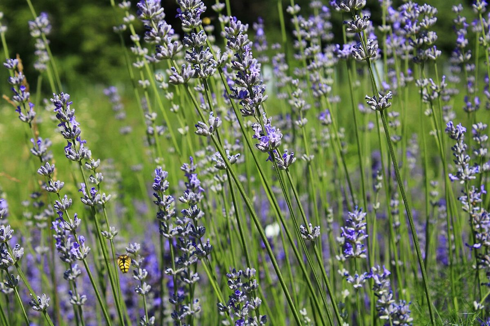

店のこと
店のこと
お店について確認できているのは、所在地とInstagramのアカウントだけです。
「想像してみる」の部分は制作側の創作です。お店の実際の様子・考え・商品とは関係ありません。
確認できていること
- 店名は「コウボパンとおやつ kukka」、業種はパン屋(天然酵母パンとおやつ)
- 所在地は岡山県津山市林田767-1(〒708-0822)
- 電話番号はなし。連絡はInstagramから
- 営業時間・定休日・メニュー・価格・ご予約・駐車場は準備中

藤 朱
朱想像してみる
花の名前から、窓をひとつ
お店の考えは分かりません。制作側は、「花」の語感から、色とりどりの光が差す窓をひとつ思い浮かべました。ここに並べた色ガラスの玉や花の写真は、その連想を絵にしたものです(実際のお店の姿ではありません)。
 藍
藍 翠
翠 紅
紅